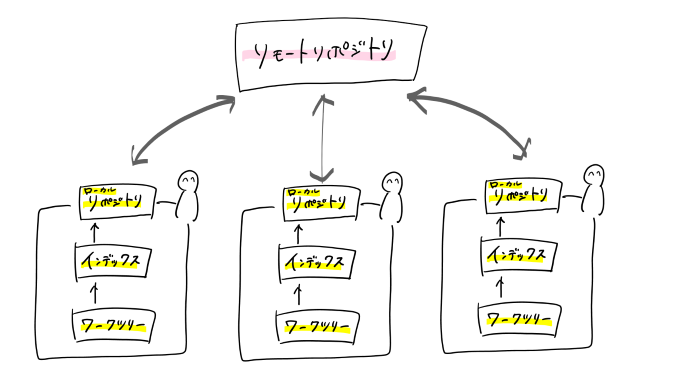

第1回
gitに関して
gitとは
gitとは、ソースコードのバージョン管理システムで,ファイルのバージョン管理を簡単にできるものである。
主にできることとして以下の3つが挙げられる
- ファイルの変更履歴の管理
- 過去のファイルに戻す
- 編集した履歴を複数人で共有
テキストデータや画像データ、Excelファイルなども管理することができるため、
プログラマーのコード編集からWEBデザイナーまで、幅広く活用することができる。
gitの基本構造と用語
gitの構造のイメージは以下のようである。

ワークツリー：作業を行う場所
インデックス：リポジトリにコミットする準備をする場所
コミット：追加・変更したファイルをgitに登録するためのコマンド
ローカルリポジトリ：ファイルなどの状態を保存する場所。ユーザー自身の手元のマシン上に配置する。
リモートリポジトリ：複数人で共有するためのリポジトリ。GitHubもこのリモートリポジトリに含まれる。
htmlに関して
htmlとは
htmlとは、WEBページを作成するための言語であり、
ハイパーテキスト・マークアップ・ランゲージ(Hyper Text Markup Language)の略である。
WEBサイト内のどこにタイトルや本文を配置し、段落のどこまでをひとまとまりにするかなど、
文章の構造を明確にする役割がある。
<>で囲まれたタグを使うことによって、WEBページをデザインすることができる。
タグについて
タグは基本的に
＜タグ＞表示したい文字＜/タグ＞
というように、文字をはさんで使う。
このとき、終わりのタグにはスラッシュ「/」をつける。
基本的なタグ一覧(外部サイト)
スタイルシートとは
スタイルシートとは、CSS(Cascating Style Sheet)のことで、
WEBページの見栄えを細かく設定することができる。
CSSは複雑なので、htmlに慣れてから勉強していきたい。
スタイルシートの書き方(外部サイト)